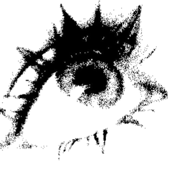
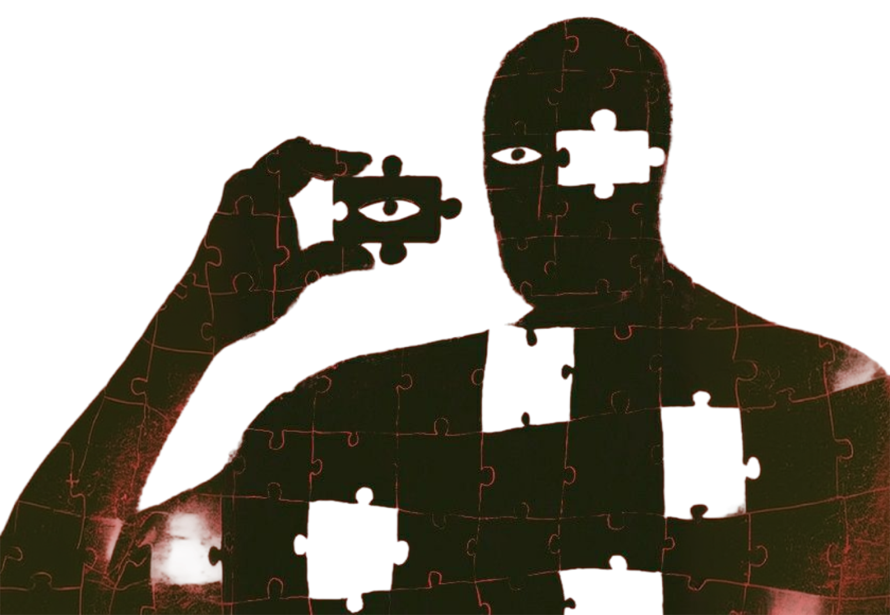
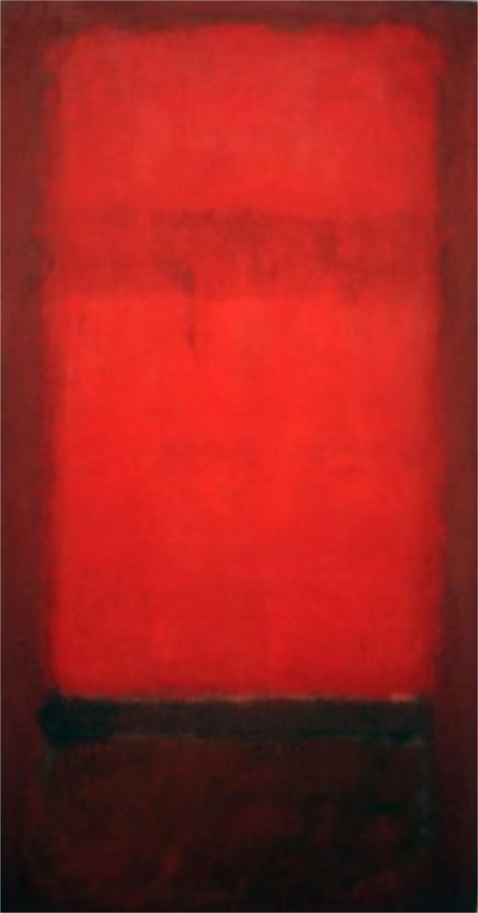
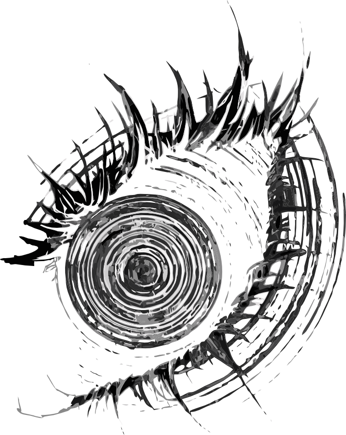
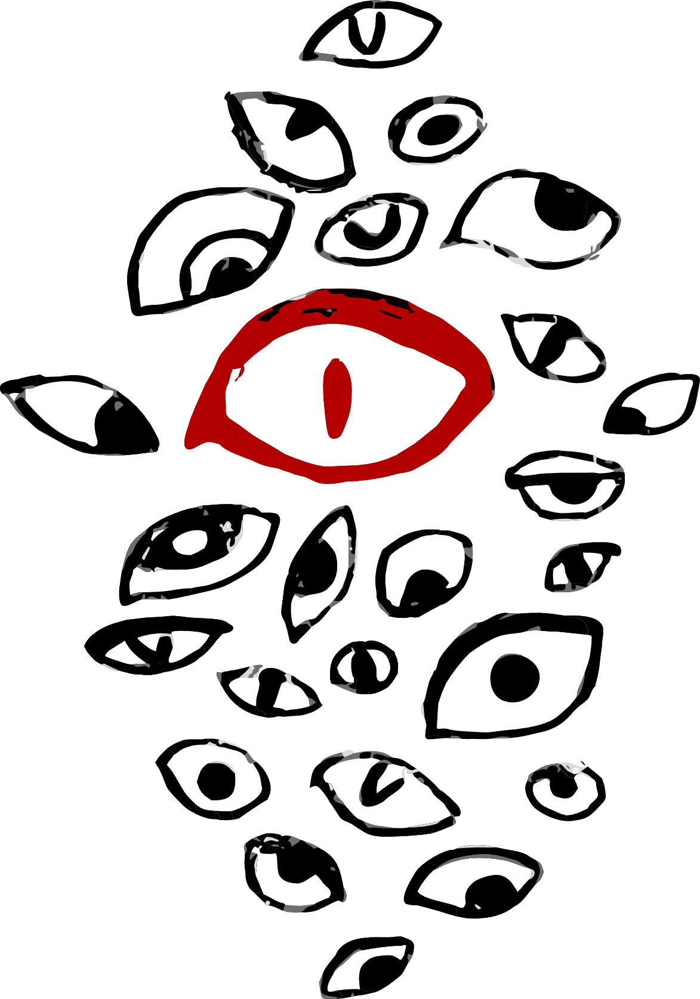
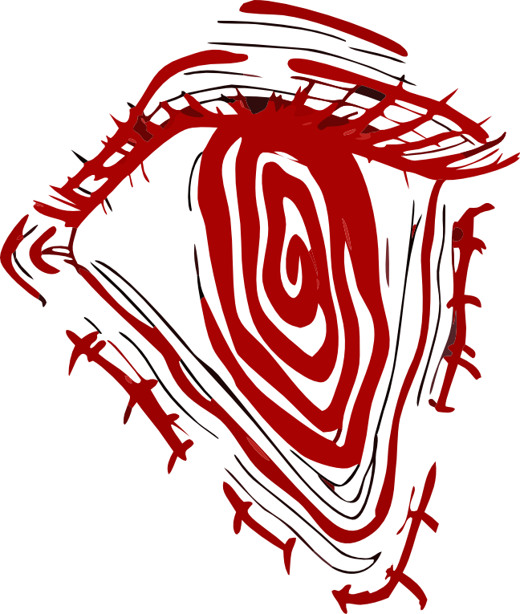
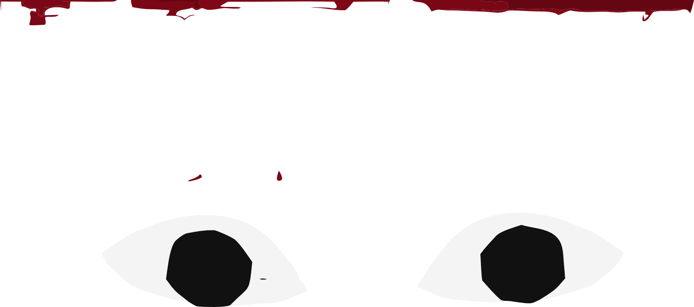
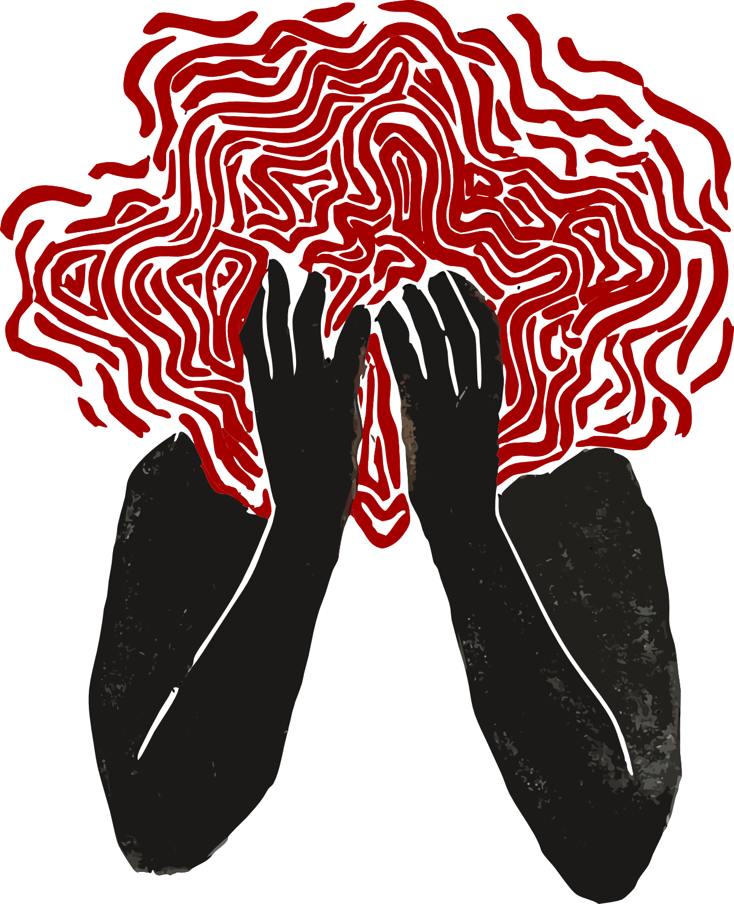
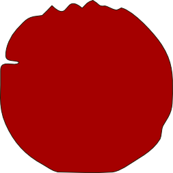

Maria
Gainza
UNA VIDA EN
PINTURAS

Una vida en pinturas
Primera edición, 2026
Código de registro: 1710033671267
DL 2025-123456
ISBN 978-987-8967-23-5
Diseño y composición: Laura Kammerbauer
engo miedo. Estoy sentada en una silla de plástico esperando mi
turno para ver al doctor. Es una mañana fría de primavera y vine al consultorio porque desde hace varios días me late el ojo derecho. Me palpita de una forma ridícula, intensa; el párpado inferior, sobre todo.
A veces creo que va a explotar. Ya descarté las causas más obvias: no es cansancio porque a veces empieza apenas cinco minutos después de despertarme, tampoco es esfuerzo porque hace una semana suspendí la lectura. No es el alcohol ni los cigarrillos ni el café, porque practico el ascetismo con dedicación. Y no creo en el estrés.
Barajé posibles enfermedades. Me metí en internet y descubrí los foros de personas a las que les late el ojo. Un grupo incluso me invitó a una de las sesiones que se llevan a cabo los lunes por la noche en el subsuelo del Hotel Bauen. Se sientan en círculo a relatar el amplio espectro de sus tormentas psíquicas: melancolía crónica, ideas mórbidas, cefaleas recurrentes, sensación de irrealidad. A veces invitan a un famoso que ha sufrido del “ojo loco”
para que relate su experiencia: ¿cómo hacer para que la cámara no registre tu sismo interno? En mi sesión anunciaban a Sandra Ballesteros. Decliné la invitación, y para cortar con la cadena de derrumbes, pedí un turno con el médico.
La sala de espera es blanca, inmaculada. Enfrente, una madre y su hijo esperan también su turno. El chico con anteojos gruesos está mascando chicle y cuando me ve se lo saca de la boca y lo estira hasta
formar un puente colgante que balancea de un lado a otro. La madre le dice que deje de hacer eso, pero el chico sigue y yo desvío la mirada. El ojo me empieza a latir por enésima vez en el día. Entonces veo el Rothko. Es un póster sobre la pared. Lo miro rápido porque, si me detengo mucho, el latido se convierte en el galope de un caballo. Es un Rothko rojo, vertical, lo reconozco porque lo he visto colgado en el Museo de Bellas


Artes. Un Rothko clásico: un rojo diablo sobre un rojo vino que vira al negro. La gente no se cansa de decir: hasta que no ves un Rothko en vivo no ves ni la mitad. A mí me sorprende todo lo que se puede ver en una reproducción. Incluso ahí Rothko no te entra por los ojos sino como un fuego a la altura del estómago. Hay días en que creo que sus obras no son obras de arte sino otra cosa: la zarza ardiente de la historia bíblica. Un arbusto que arde pero nunca se quema. Hay algo que no se gasta en un Rothko, a pesar de su creador, a pesar de la retórica inflamada que desde hace años lo pintó como un creador de íconos del más allá, un detalle que lo hizo encajar en esa tradición del arte abstracto como trip espiritual que disparó Kandinksy. Pienso esto cuando la secretaria me anuncia que el doctor Adelman está listo para verme.

Al sur de San Petesburgo está la ciudad de Daugavpils, antes llamada Dvinsk. Bajo el régimen zarista, a principios de 1900 , las opciones de trabajo ahí eran escasas y las jóvenes del lugar veían la prostitución como una salida laboral. Para escapar de ese destino, Anna Goldin se casó a los quince años con el farmacéutico Rothkowitz. Tuvo cuatro hijos. El menor de ellos, Marcus, el futuro Rothko, el más sensible e hipocondríaco, fue el único iniciado en el Talmud. Aunque la Historia no registra ejecuciones en Dvinsk, Rothko

contaría de adulto: “Los cosacos se llevaron a los judíos hacia los bosques y les hicieron cavar una fosa común. Imaginé esa tumba cuadrada tan claramente que ya no sé si la masacre ocurrió o si la inventé, pero esa imagen siempre me ha atormentado”. Una mañana la señora Rothkowitz y sus hijos se subieron a un barco en el puerto de Libau. Iban rumbo a América a reunirse con el padre, que había viajado unos meses antes. Desembarcaron en Portland, Oregon, y el mareo de tierra todavía no se les había pasado cuando el señor Rothkowitz murió de un cáncer de colon. El joven Marcus tenía once años; era judío, pobre, izquierdista. Terminó la secundaria como pudo y entró becado en la Universidad de Yale a estudiar Derecho. Meses más tarde, cuando el crack del 29 empezaba a corroer los cimientos del país, Rothko
abandonó sus estudios. Había decidido ir a Nueva York para dar unas vueltas y morirse un poco de hambre.
De haber muerto entonces, hoy sería un completo desco-
nocido. Hasta los
cuarenta y cinco años
Rothko fue un pintor
del montón. Pasó por
una fase
surrealista que
sorprende por
lo mediocre
y después, en los años
treinta, empezó a pin-
tar unas
arquitecturas
urbanas angus-
tiantes con
figuras
elongadas a lo Giacometti.
Ya todos lo daban por
perdido cuando
ocurrió
el
momento
“ahá”, ése que los
artistas esperan toda una vida y que a veces llega y otras no: la
visión
que logra salir finalmente a la superficie. Ocurrió en el verano de 1945 , cuando se puso a
pintar una serie de bloques abstractos y esfumados que
flotaban en el espacio de
la
tela. La
línea había
desaparecido, los
colores se habían
disparado: rosas, duraz-
nos,
lavandas,
blancos,
amarillos,
azafranes con la
evanescencia del
aliento sobre
un
vidrio. Su ojo
parecía
haberse dilatado.
Dicen que hay que
pararse frente a una
tela de Rothko
como frente a
un
amanecer. Son cuadros
bellísimos, pero la belleza
puede ser sublime o puede ser decorativa, y en los livings neoyorquinos del Upper East Side los cuadros de Rothko combinaban deliciosamente bien con los sofás de cuero y las alfombras de angora. Las críticas le cayeron a baldazos. Rothko las sufría mientras su cuenta bancaria se abultaba. Algunos lo acusaban de ser un efectista que hacía del rigor del expresionismo abstracto un buen negocio. El pintor empezó a defenderse con frases del tipo: “La experiencia trágica es para mí la única fuente del arte”. Fue como cavarse su propia fosa: durante años esa grandilocuencia ahogaría sus obras, las convertiría en opacos menhires. El asunto es que a Rothko la ansiedad lo hacía hablar de más. Olvidaba que los elementos más poderosos de una obra son, con frecuencia,
sus silencios, y que el estilo es un medio para insistir sobre algo. Puede que mirar un Rothko tenga algo de experiencia espiritual, pero de una clase que no admite palabras. Es como visitar los glaciares o atravesar un desierto. Pocas veces lo inadecuado del lenguaje se vuelve tan patente. Frente a Rothko una busca frases salidas de un sermón dominical pero no encuentra más que eufemismos. Lo que uno querría decir en realidad es: “puta madre”.
En los años de mayor éxito, de 1949 a 1964 , Rothko empezó a derrapar: su matrimonio se partió al
medio, sus amistades se alejaron, se tomó hasta el agua de las macetas y se envenenó de odio. Se
había disparado su espiral de destrucción. Una noche tormentosa, cuando salía de su edificio, el
portero le advirtió que se cuidara porque la calle estaba fea (Take care, the streets are rough).
Rothko contestó: “Hay una sola cosa de la que me debo cuidar: de que un día el negro se trague al
rojo”.
—¿Antecedentes? —dice el doctor Adelman.
—¿Oculares? Diplopía.
trataron de
los médicos
eran tan
anestesia no
bola
de
nervios
El doctor Adelman me
devuelve a la sala de espera.

Como a los siete
operarme pero
desistieron.
inquieta que la
prendía. Era
una
de chica, pero
cambia, ¿no?
ignora y me
Debo permanecer

con los ojos cerrados hasta que me hagan efecto las gotas. Soy tramposa, cada tanto espío entre las pestañas húmedas. Miro el póster de Rothko. Siento mis pupilas expandirse. Abro y cierro. Cuando abro, el rojo me chupa; cuando cierro, flota sobre el negro de mis párpados. Me acerco, trato de pararme, como aconsejaba Rothko, a cuarenta y seis centímetros de distancia. Y pienso: ¿cómo pudo este hombre producir las pinturas eufóricamente abstractas de su mejor período en su peor momento de derrumbe? Y eso me lleva a T. S. Eliot: “Cuanto más perfecto es el artista, más completamente separado en él estará el hombre que sufre de la mente que crea”. La secretaria del doctor Adelman me ordena que me siente y yo vuelvo sobre mis pasos con los ojos cerrados.
La mañana del 25 de febrero de 1970 , Rothko entró en el baño, se sacó los zapatos, acomodó
el
pantalón y la camisa sobre una silla y con una navaja se hizo dos cortes profundos en los
antebrazos. Tenía un enfisema avanzado. Cuando su asistente lo encontró
estaba de espaldas sobre un charco de sangre, sus brazos abiertos a los costados. Una hora después, cuando llegó la policía, flotaba en una pileta roja del tamaño de sus pinturas.
Rothko se había llevado su secreto al más allá. ¿Qué había pasado realmente en 1959
cuando,
en la cumbre de su carrera, el pintor se negó a entregar los murales para el restaurant del
Four Seasons en el edificio Seagram de Nueva York, el encargo mejor pago de la historia del
expresionismo abstracto? Bájense del subte a la altura de 375 Park Avenue, crucen la calle,
quiebren el cuello hacia atrás y verán aquella torre estilizada, más helada que un
logaritmo, creada por Mies van der Rohe en 1954 . Ahora entren al
restaurante. Tan contenido pero
palaciego. ¿Ven las palmeras, el pequeño estanque, los platos flambeados? ¿Ven atrás las
cortinas de Picasso, los
Miró y Frank Stella?
Cubren el lugar que
dejaron los
Rothkos.
Las razones por las
que Rothko
aceptó deco
rar un sím-
bolo del po-
derío
económico
americano son in-
sondables. Dore Ashton,
que lo visitaba seguido
en
su
estudio, dice
que Rothko creía que
los murales iban a ser
para el comedor de
los empleados. Otros
dicen que eso es
in-
verosímil,
que Rothko
sabía perfectamente
que iban a

decorar el lujoso restaurante. Sus peores enemigos resultaron ser sus amigos: Barnett Newman
y Clifford Still lo tildaron de prostitutay
del arte. Pero, como
diría alguien
que
conozco,
“hay formas
y formas de
prostitución”.
Rothko dijo
otra cosa.
Se
le dijo al perio-
dista John Fischer
en 1959 , en un
transatlántico
rumbo
a Nápoles:
“Debemos encon-
trar un modo de
vida y
un trabajo
que no tenga las
consecuencias de
ir acabando con
todos nosotros”
Entre whiskies que se volcaban
Entre whiskies que se volcaban sobre la cubierta de clase turista, Rothko le contó que su masterplan era “arruinarle el apetito a esos ricos bastardos con pinturas que los harían sentir que no había escapatoria”. Estaba pensando en la opresiva Biblioteca Laurenciana de Miguel Ángel que había visto en Florencia hacía unos años y que planeaba volver a visitar en ese viaje. Días más tarde, en Pompeya, los Rothko (su esposa Mell, su hija Kate y ahora Fischer, que no se despegaba) entraron en la Villa de los Misterios. Rothko se impresionó por el uso lujurioso del rojo y negro en el comedor dedicado a Dionisio, la forma perversa en que los colores se fundían. Todo esto estaba en su cabeza cuando volvió a
Nueva York y llevó a su esposa a almorzar al flamante Four Seasons. Sus cuadros todavía no estaban colgados, según él les faltaba el toque final. El restaurant rebalsaba de trajes azul marino de Brooks Brothers, corbatas de Stefano Ricci, collares de perlas y estolas de armiño. Rothko saboreaba un gazpacho, sus ojos nerviosos escaneaban el lugar. De golpe, detuvo su cuchara en el aire, a mitad camino entre su boca y el plato, y le preguntó a Mell si no olía algo raro. ¿Qué clase de olor?, dijo ella. “Como a dinero podrido”, contestó Rothko. Luego apuró su trago, empujó la mesa hacia adelante y anunció que rompería su contrato.
Los murales que nunca llegaron al Four Seasons son bloques grises sobre fondos negros. Cuando
salieron a la luz fotos de ellos, todos pensaron: “Con razón. Estas pinturas eran un callejón sin
salida”. Nada de eso. Rothko había concebido sus murales como una forma de exponer los trapos sucios
de la sociedad norteamericana. Había imaginado obras que resultaran tan poco bienvenidas como vidrio
molido en el risotto. “Pero pensándolo mejor”, le dijo a la pobre Mell que estaba hasta la coronilla
de los discursos pomposos de su marido, “es inútil. Esta gente nunca se dará por enterada”. Ese
mediodía en el Four Seasons, Rothko entendió que, para los banqueros y empresarios que almorzaban a
su alrededor, sus pinturas, fueran del color que fueran, terminarían por ser tan decorativas como
sus esposas.
El doctor Adelman me asegura que no tengo nada grave. Es una

mioquimia, un temblor involuntario de las fibras musculares producto de una irritación. El ojo me deja de latir. Voy a vivir, me digo, ¡voy a vivir!, y mientras espero que llegue el ascensor miro por última vez el póster de Rothko. Lo miro fijo. Me hace sentir única: la brutal soledad de este pedazo de carne transpirada que soy. Me recuerda que estoy viva y me entristece, como cuando uno abraza una promesa de felicidad que sabe que no va a durar.
Mi marido se enfermó dos veces. Linfoma no-Hodgkin fue el diagnóstico. Células B, la primera
vuelta,
un tratamiento largo pero relativamente fácil; células T la segunda, un tratamiento el doble de
largo y demoledor. Hay quienes dicen: “No te queda otra que pelearla cuando estás ahí. Vos harías lo
mismo”. Yo creo que no. Pero él aguantó. En el Hospital Ramos Mejía, durante un año. Noches como
túneles, una pleuresía que le atenazaba el pecho, quimios mortíferas y toda la lista de escalofríos
que les voy a ahorrar. En el hospital había una puta, una morocha de vestido rojo y medias caladas
que durante el día dormía en las sillas de plástico de la entrada, acurrucada contra unas bolsas que
supongo guardarían sus cosas, temblando cada tanto como si un rayo la recorriera por dentro. Durante
las noches se la podía oír caminando por los pabellones, sus tacos resonaban contra las baldosas
heladas; iba de enfermo en enfermo, se frotaba contra el hierro de las camas, hacía lo que tenía que
hacer.
Al lado del tubo de oxígeno mi marido tenía una pequeña
reproducción de Rothko pegada a la pared. Tenía otras imágenes también: una foto de su banda de rock, una postal de la Coca Sarli bañándose desnuda en el río, una servilleta autografiada por el Príncipe Francescoli. El Rothko se lo había llevado yo; el resto, sus amigos, en un intento por levantarle el ánimo. Él decía que las imágenes le funcionaban de noche, como estampitas, cuando el silencio del hospital lo abrumaba. “A veces me tomo la morfina y con la linterna las ilumino. Un poco ayuda”.
Una noche en que me había quedado hasta tarde a su lado, serían las once, la puta pasó caminando y
se
detuvo a los pies de la cama. Saludó por el nombre a mi marido y se quedó unos segundos mirando las
imágenes en la pared; la luz de la luna entraba como un reflector por la ventana. ¿A mí me pareció o
reconoció la pintura?, le pregunté a mi marido después de que se hubiera ido. “No te pareció; la
conoce.
Estuvimos charlando y ahora dice que Roco es su pintor favorito”. Dos noches después me la volví a
encontrar. Íbamos a tomar el ascensor pero se había trabado un piso más arriba. Mientras esperábamos
le
sonreí y solté una puteada para hacerme la canchera. Me daba curiosidad su interés por Rothko, el
vínculo entre el arte y la calle en su estado más literal. Pero ella me esquivó la mirada, me colocó
en
mi lugar de burguesita del arte, turista de hospital, antropóloga de gabinete fascinada por lo
exótico.
Entendí rápido y no molesté más. Cuando finalmente llegó el ascensor, bajamos en silencio, salimos a
la
larga nave central que conecta los pabellones con el hall de entrada. Ella iba adelante; por un
instante
me pareció que me guiaba hacia la capilla, hacia algún tipo de sacrificio o comunión. Pero de
repente
dobló por
un pasillo oscuro que llevaba a Hemodinamia. Su vestido fue lo último que vi, el momento exacto en que el rojo se disolvía en el negro.
Una mujer recorre la vida de un artista a través de sus cuadros, sus obsesiones y sus silencios. Entre la pintura y la biografía, este libro es una forma de mirar, de recordar y de preguntarse qué vemos cuando miramos.
“El arte también es una manera de vivir.”
“Hay vidas que se cuentan en imágenes.”